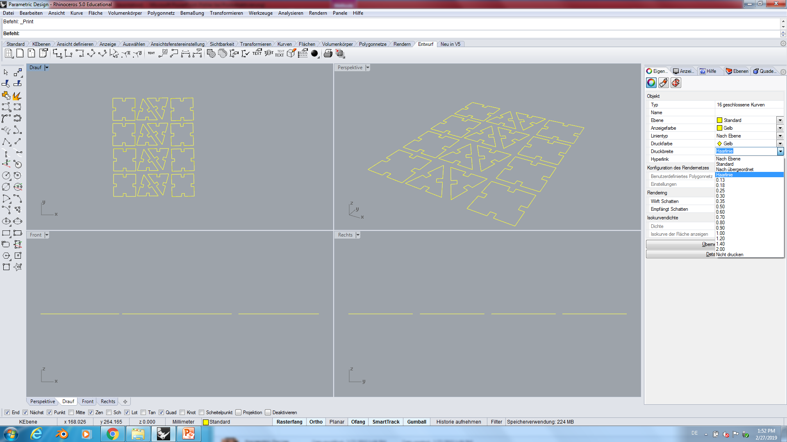

Fabacademy
Lesson 04 - Electronic Productions
Christian Schendera - Rhine-Waal University
1.1 This weeks Assignment (Laser Cutting)
Group assignment
- characterize your lasercutter's focus, power, speed, rate, kerf, and joint clearance
Individual assignments
- Design, lasercut, and document a parametric press-fit construction kit, which can be assembled in multiple ways. Account for the lasercutter kerf.
- For extra credit include elements that aren't flat.
|
Learning outcomes
- Demonstrate and describe parametric 2D modelling processes
- Identify and explain processes involved in using the laser cutter.
- Develop, evaluate and construct the final prototype
|
Have you?
- Explained how you parametrically designed your files
- Shown how you made your press-fit kit
- Included your design files and photos of your finished project
|
1.2 This weeks Assignment (Vinyl Cutting)
Group assignment
There is no specific project that is focussed on this very useful tool. There are a range of ways you might utilise it throughout the programme, or your local instructor may set a specific project. You might make:
- stickers
- flexible circuit boards
- a textured surface/relief pattern
- screenprint resists/stencils
Ensure that you have used it in some way during this time and met the objectives below.
|
Learning outcomes
- Identify and explain processes involved in using this machine.
- Design and create the final object
|
Have you?
- Explained how you drew your files
- Shown how you made your vinyl project
- Included your design files and photos of your finished project
|
Parametric-Laser-Cutting
modelling
manual approach
First build a rectangle and insert 4 small rectangle on every side. Than trimmed the unneeded lines.
|
Same with a triangular and a circle. For both I had to use small rectangles with fixation on 3 points to build it in a right angle and also trimmed out the unneeded lines.
|
I used command in the scetchpallette to make all lines equal, so a bigger rectangle on one drawing will automatically change all others, too. In case i change the thickness of the material for example.
|
v.s.
Parameter approach
here I can determine values for individual purposes. Just click on the + and type in the value and the name for it. In example "thickness".
|
Now, when you press "D" or right click and press Sketch measurement, than you can define the size.
|
Instead of typing numbers, you can now define by the specific name you gave to the value, like here "thickness"
|
|
As you see, the thickness now changed to 5mm automatically.
|
You can do that for every purpose you like. I also defined the length of the sides next to my cutoffs (10mm).
|
Now if you use a different material it is easy to change the sizes of all drawings by simple using the parameter and changing the values as you like. I now wanted to have a 10mm thick material and the sidelength should be 40mm.
|
Note:
Even if you use the parameter to define your values, it is inevitable to use the tool for making lines equal to each other. Or for the triangular to make the cut-off-lines coinzident to the outside-line.
Cutting
When you exported your sketch as an .dxf file, drag it on a USB stick and drop it on the Computer of the Laser Cutter
|
For dublicating and printing I use Rhino(ceros). First I dublicated each shape 8 times and grouped them together for less material waste.
|
Because I don't know exactly wich instructions to set, i wanted to make a test.
For that, I made 3 rectangles and colored them differently, so I can set different instructions for each shape.
|
If I use exactly the right color as the rectangles, the machine will recognize each different setting.
- Speed - 100%
- Power - 70%
|
- Speed - 100%
- Power - 60%
|
- Speed - 100%
- Power - 50%
|
|
|
As you see all rectangle got cut out, so I could use the smallest Power of all three try-outs. (Note: before these 3 tests, I also tried out Power 40% - but it didn't went trough the whole material, so 50% should be fine!)
|
Now when I know which settings to use, I can place my Parametric shapes on the printing area.
|

Because I know, that yellow has the right Speed and Power, I can just change the color of my shapes in yellow and send it to the machine
|
Vinyl cutting
I wanted to design the backside of my ISP. It should contain my intial letters together with the FabAcademy logo. For that I used Illustrator and exported this image to a .dxf to silhouette.
Modelling
I first grabbed the images (the png of the ISP, Logo and typed my letters as text).
I used the tool Bildnachzeichner to draw the grabbed images as well as the outter layer of the ISP.
|
Than I simply exported it as a .dxf file.
|
|
In Silhouette it looks like that
|
Scale everything to the size of the Microcontroller and go for it
|
Cutting
|
With the blue rotary swivel you can change the grinding pressure of the knife. In my case I used 3 (that depends on the thickness and the consistency of the material)
|
push the material in the aperture and press the key for collection. Now you can press send and the cutter will start.
|
Note: The Design of a Vinyl cuttet object is very limited in size (small objects). As you can see, the FabAcademy Logo is not properly cutted.